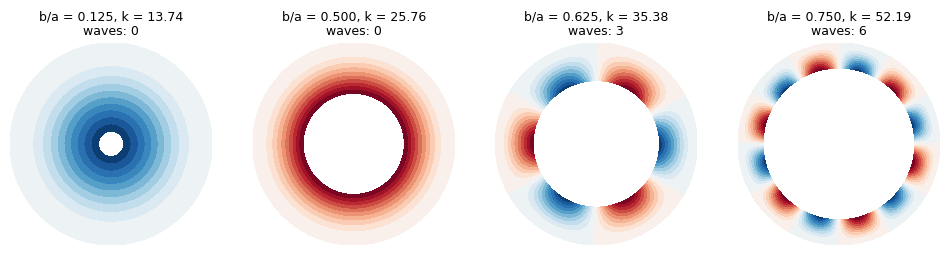
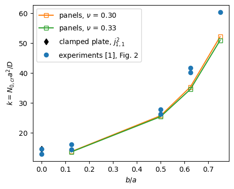

Buckling of clamped-free annular plates compressed on the outer edge (Majumdar 1971)#
Majumdar [1] studied, in theory and in tests on aluminium plates, the buckling of an annular plate clamped on the outer edge, free on the inner edge and compressed by a uniform radial force on the outer edge. Unlike the annulus compressed on both edges (Yamaki [2]), whose membrane state is uniform, the free inner edge gives the non-uniform state of Lamé, and the mode changes from axisymmetric to waves along the circumference as the hole grows. This notebook computes the buckling loads with
annular_clpt_donnell of panels, the pre-buckling state coming from a linear static case, and compares them with the experiments of [1], Fig. 2.
[1]:
import time
import numpy as np
import matplotlib.pyplot as plt
from scipy.special import jn_zeros
import panels
from panels.shell import Shell
from panels.multidomain import MultiDomain
%matplotlib inline
print('panels', panels.__version__)
T_START = time.time()
def print_table(rows, headers):
cols = list(zip(*([headers] + [[str(c) for c in r] for r in rows])))
widths = [max(len(c) for c in col) for col in cols]
fmt = ' '.join('%%%ds' % w for w in widths)
print(fmt % tuple(headers))
print(' '.join('-'*w for w in widths))
for r in rows:
print(fmt % tuple(str(c) for c in r))
def rel(value, ref):
# relative difference in per cent
return 100.*(value - ref)/ref
panels 0.15.0
1. Specimens and load parameter#
From [1]: plates of 2024 aluminium, 0.041 in thick, clamped between two steel rings of inner diameter 8 in, so that the outer radius is \(a = 4\) in; inner radii \(b = 0, 0.5, 2, 2.5, 3\) in ([1], Table 1). The assembly was heated and the larger thermal expansion of the aluminium plate, restrained by the steel rings, compressed its outer edge radially; the buckling temperatures were found with Southwell plots and converted by [1] into the load parameter
\(N_0\) being the radial compressive force per unit length at the outer edge ([1], nomenclature and Eq. (8); the definition is confirmed by the relation of \(k\) to the parameter \(k'\) of the strip in [1], p. 1704). \(k\) does not depend on \(E\); [1] does not give \(\nu\), and the free inner edge makes \(k\) depend on it, so \(\nu = 0.30\) and \(0.33\) are both computed.
[2]:
A_OUT = 4. # in, [1] p. 1704: steel rings of inner diameter 8 in
H = 0.041 # in, [1] p. 1704
B_IN = (0.5, 2., 2.5, 3.) # in, [1] Table 1 (b = 0 is the solid plate, Section 5)
E = 10.6e6 # psi, not given in [1]: k does not depend on it
NUS = (0.30, 0.33) # not given in [1]
def flexural_rigidity(nu):
return E*H**3/(12*(1 - nu**2))
2. Pre-buckling state and model#
An annulus compressed by \(N_0\) on the outer edge \(\rho = a\) and free on the inner edge \(\rho = b\) has the axisymmetric membrane state of Lamé ([1], Eq. (2))
The full annulus is made of two half annuli of annular_clpt_donnell whose radial edges are free and connected with 'SSycte'. The outer edge is clamped, \(w = w_{,\rho} = 0\), has \(v = 0\), which removes the in-plane rigid motions without changing the axisymmetric state, and carries the radial force \(N_0\) per unit length (along \(x = r - \rho\), which points inwards); the inner edge is free. Each field is a Ritz series of Bardell’s hierarchical functions, \(m\)
terms along the radius and \(n\) along each half circumference [3]. The linear static case gives the geometric stiffness \(\boldsymbol{K}_G(\boldsymbol{c})\) and MultiDomain.linear_buckling the critical load factor; with \(N_0 = D/a^2\) the factor is \(k\).
[3]:
def annulus(b, N0, m, n, nu):
halves = []
for _ in range(2):
s = Shell(model='annular_clpt_donnell', a=A_OUT - b, b=np.pi*A_OUT,
r=A_OUT, m=m, n=n, plyt=H, stack=[0], laminaprop=(E, nu))
for e in ('y1', 'y2', 'x2'):
for f in ('u', 'v', 'w', 'ur', 'vr', 'wr'):
setattr(s, e + f, 1)
s.x1u = 1 # outer edge: radial force, u free
s.x1v = 0 # no in-plane rigid motion
s.x1w = s.x1wr = 0 # clamped
s.add_distr_load_fixed_x(0., funcx=lambda y: N0 + 0*y)
halves.append(s)
p1, p2 = halves
conn = [dict(p1=p1, p2=p2, func='SSycte', ycte1=p1.b, ycte2=0),
dict(p1=p1, p2=p2, func='SSycte', ycte1=0, ycte2=p2.b)]
return MultiDomain([p1, p2], conn)
def buckling(b, m, n, nu):
# k = N0 a^2/D of the least load factor, and the model and first mode
md = annulus(b, flexural_rigidity(nu)/A_OUT**2, m, n, nu)
eigvals, eigvecs = md.linear_buckling(num_eigvalues=6, silent=True)
i = np.argmin(np.abs(eigvals))
return eigvals[i], md, eigvecs[:, i]
The membrane state of the linear static case, \(b = 2\) in, along a radius, against Lamé’s solution (\(N_{xx} = N_{\rho\rho}\), \(N_{yy} = N_{\theta\theta}\)):
[4]:
N0 = 1.
b = 2.
md = annulus(b, N0, 12, 16, NUS[0])
c = md.linear_static()
s = md.panels[0]
xs = np.linspace(0, s.a, 6)[:, None]
ys = np.full_like(xs, s.b/3)
f = s.stress(c[s.col_start:s.col_end], xs=xs, ys=ys, NLgeom=False)[1]
rows = []
for x, Nr, Nt in zip(xs.ravel(), f['Nxx'].ravel(), f['Nyy'].ravel()):
rho = A_OUT - x
Nr_ref = -N0*A_OUT**2/(A_OUT**2 - b**2)*(1 - b**2/rho**2)
Nt_ref = -N0*A_OUT**2/(A_OUT**2 - b**2)*(1 + b**2/rho**2)
rows.append(['%.2f' % rho, '%.5f' % Nr, '%.5f' % Nr_ref, '%.5f' % Nt, '%.5f' % Nt_ref,
'%+.3f' % rel(Nt, Nt_ref)])
print_table(rows, ['rho (in)', 'Nxx', 'N_rho Lame', 'Nyy', 'N_theta Lame', 'diff Nyy (%)'])
rho (in) Nxx N_rho Lame Nyy N_theta Lame diff Nyy (%)
-------- -------- ---------- -------- ------------ ------------
4.00 -1.00000 -1.00000 -1.66667 -1.66667 -0.000
3.60 -0.92181 -0.92181 -1.74486 -1.74486 +0.000
3.20 -0.81250 -0.81250 -1.85417 -1.85417 +0.000
2.80 -0.65306 -0.65306 -2.01361 -2.01361 -0.000
2.40 -0.40741 -0.40741 -2.25926 -2.25926 -0.000
2.00 -0.00000 -0.00000 -2.66667 -2.66667 +0.000
3. Convergence#
For each inner radius, with \(\nu = 0.30\):
[5]:
MESHES = [(8, 12), (10, 14), (12, 16), (14, 18), (16, 20)]
K = {}
for b in B_IN:
rows = []
prev = None
for m, n in MESHES:
K[(b, m, n)] = buckling(b, m, n, NUS[0])[0]
change = '' if prev is None else '%+.4f' % rel(K[(b, m, n)], prev)
rows.append([m, n, '%.3f' % K[(b, m, n)], change])
prev = K[(b, m, n)]
print('b = %.1f in, b/a = %.3f' % (b, b/A_OUT))
print_table(rows, ['m', 'n', 'k', 'change (%)'])
print()
M_FIN, N_FIN = MESHES[-1]
b = 0.5 in, b/a = 0.125
m n k change (%)
-- -- ------ ----------
8 12 13.739
10 14 13.736 -0.0249
12 16 13.735 -0.0022
14 18 13.735 -0.0002
16 20 13.735 -0.0000
b = 2.0 in, b/a = 0.500
m n k change (%)
-- -- ------ ----------
8 12 25.759
10 14 25.759 -0.0000
12 16 25.759 -0.0000
14 18 25.759 -0.0000
16 20 25.759 -0.0000
b = 2.5 in, b/a = 0.625
m n k change (%)
-- -- ------ ----------
8 12 35.377
10 14 35.377 -0.0001
12 16 35.377 -0.0000
14 18 35.377 -0.0000
16 20 35.377 +0.0000
b = 3.0 in, b/a = 0.750
m n k change (%)
-- -- ------ ----------
8 12 52.289
10 14 52.193 -0.1825
12 16 52.187 -0.0113
14 18 52.187 -0.0002
16 20 52.187 -0.0000
4. Buckling modes#
The number of waves along the circumference is counted from the sign changes of \(w\) of the first mode along a circle in the middle of the plate; [1], Fig. 2, gives the axisymmetric mode (\(n = 0\)) for \(b/a = 0.5\), two waves for \(b/a = 0.625\) and five for \(b/a = 0.75\), observed in the tests of series B.
[6]:
def waves(md, mode):
ws = []
for p in md.panels:
ys = np.linspace(0, p.b, 400)[:, None]
xs = np.full_like(ys, p.a/2)
ws.append(p.uvw(mode[p.col_start:p.col_end], xs=xs, ys=ys)[1]['w'].ravel())
w = np.concatenate(ws)
# half the number of sign changes along the closed circle
return np.count_nonzero(np.sign(w) != np.sign(np.roll(w, 1)))//2
RES = {}
for nu in NUS:
for b in B_IN:
RES[(b, nu)] = buckling(b, M_FIN, N_FIN, nu)
fig, axes = plt.subplots(1, len(B_IN), figsize=(12, 3.3))
for ax, b in zip(axes, B_IN):
k, md_, mode = RES[(b, NUS[0])]
wmax = max(np.abs(p.uvw(mode[p.col_start:p.col_end], gridx=30, gridy=60)[1]['w']).max()
for p in md_.panels)
for j, p in enumerate(md_.panels):
xs, ys = np.meshgrid(np.linspace(0, p.a, 30), np.linspace(0, p.b, 120), indexing='ij')
w = p.uvw(mode[p.col_start:p.col_end], xs=xs, ys=ys)[1]['w']
th = ys/A_OUT + j*np.pi
cs = ax.contourf((A_OUT - xs)*np.cos(th), (A_OUT - xs)*np.sin(th), w/wmax,
levels=np.linspace(-1, 1, 21), cmap='RdBu_r')
ax.set_aspect('equal')
ax.axis('off')
ax.set_title('b/a = %.3f, k = %.2f\nwaves: %d' % (b/A_OUT, k, waves(md_, mode)), fontsize=9)
plt.show()

5. Comparison with the experiments#
[1] reports the experimental values only as points of its Fig. 2, \(k\) against \(b/a\). They were read from the figure (centres of the markers in a 600 dpi image of the PDF, the axis calibrated on the labels of \(k\)); the reading is accurate to about \(\pm 0.3\) in \(k\). For \(b = 0\) the reference is Bryan’s clamped circular plate, \(k = j_{1,1}^2\), \(j_{1,1}\) the first zero of \(J_1\) ([1], Fig. 1; [2], Eq. (32)), which does not depend on \(\nu\); the solid plate is not an annular sector.
[7]:
# [1] Fig. 2, read from the figure; two specimens per ratio except b/a = 0.75
K_EXP = {0.: (14.55, 12.95), 0.5: (16.20, 14.45), 2.: (27.87, 26.32),
2.5: (41.71, 40.16), 3.: (60.46,)}
k_bryan = jn_zeros(1, 1)[0]**2
rows = []
for b, exps in K_EXP.items():
for i, k_e in enumerate(exps):
if b == 0:
th = [k_bryan, k_bryan]
else:
th = [abs(RES[(b, nu)][0]) for nu in NUS]
rows.append(['%.3f' % (b/A_OUT), i + 1, '%.2f' % k_e]
+ ['%.2f' % t for t in th]
+ ['%+.1f' % rel(t, k_e) for t in th])
print_table(rows, ['b/a', 'specimen', 'k experiment [1]', 'panels nu=0.30',
'panels nu=0.33', 'diff (%) nu=0.30', 'diff (%) nu=0.33'])
fig, ax = plt.subplots(figsize=(5, 4))
for j, nu in enumerate(NUS):
ax.plot([b/A_OUT for b in B_IN], [abs(RES[(b, nu)][0]) for b in B_IN], 's-',
color='C%d' % (j + 1), mfc='none', label=r'panels, $\nu$ = %.2f' % nu)
ax.plot([0], [k_bryan], 'kd', label='clamped plate, $j_{1,1}^2$')
for b, exps in K_EXP.items():
ax.plot([b/A_OUT]*len(exps), exps, 'o', color='C0',
label='experiments [1], Fig. 2' if b == 0 else None)
ax.set_xlabel('$b/a$')
ax.set_ylabel('$k = N_{0,cr} a^2/D$')
ax.legend()
plt.show()
b/a specimen k experiment [1] panels nu=0.30 panels nu=0.33 diff (%) nu=0.30 diff (%) nu=0.33
----- -------- ---------------- -------------- -------------- ---------------- ----------------
0.000 1 14.55 14.68 14.68 +0.9 +0.9
0.000 2 12.95 14.68 14.68 +13.4 +13.4
0.125 1 16.20 13.74 13.62 -15.2 -16.0
0.125 2 14.45 13.74 13.62 -4.9 -5.8
0.500 1 27.87 25.76 25.42 -7.6 -8.8
0.500 2 26.32 25.76 25.42 -2.1 -3.4
0.625 1 41.71 35.38 34.56 -15.2 -17.1
0.625 2 40.16 35.38 34.56 -11.9 -13.9
0.750 1 60.46 52.19 50.98 -13.7 -15.7

6. Discussion#
Pre-buckling state. The linear static case reproduces Lamé’s solution to all printed digits.
Convergence. From \(m = 12\), \(n = 16\) on, \(k\) changes by less than 0.02 %; the finest mesh, \(m = 16\), \(n = 20\), is used.
Modes. panels finds the axisymmetric mode for \(b/a = 0.125\) and \(0.5\), as [1] (theory and tests), three waves for \(b/a = 0.625\) and six for \(b/a = 0.75\), where [1], Fig. 2, gives two and five waves. The curves of [1] for \(n \ge 2\) come from a one-term Rayleigh-Ritz solution with \(w = w_0 (1 - r^2/a^2)^2 \cos n\theta\) ([1], Eq. (27)), which overestimates the loads (for \(b = 0\) it gives \(k \approx 16\) instead of Bryan’s 14.68) and can change the order of the curves of neighbouring \(n\), which lie close together for large \(b/a\) ([1], p. 1707). The wave numbers observed in the tests of series B also depend on the imperfections, as [1] remarks.
Load. A small hole lowers the load below that of the solid plate (13.7 against 14.7 for \(b/a = 0.125\)), the circumferential compression doubling at the free edge of the hole; [1], Fig. 2, shows no such dip because of the one-term approximation. For \(b/a \ge 0.5\) the load grows quickly with the hole, the plate approaching a long strip clamped on one edge and free on the other.
Experiments. The tests lie above the computed loads by 2 % to 17 % (except the two solid plates, 1 % and 12 % below Bryan’s value), with \(\nu = 0.30\); \(\nu = 0.33\) lowers the computed loads by 1 % to 2 % and increases these differences. [1] explains the higher experimental loads by slipping between the aluminium plate and the steel rings, which reduces the radial force actually transmitted at a given temperature, and the temperature in the plate was not uniform (series B); the experiments therefore support the computed trend of the load and the change of mode with \(b/a\) rather than its values.
References#
Majumdar, S., “Buckling of a thin annular plate under uniform compression”, AIAA Journal, Vol. 9, No. 9, 1971, pp. 1701-1707, Eqs. (2) and (8), Table 1, Figs. 1 and 2. https://doi.org/10.2514/3.6419
Yamaki, N., “Buckling of a thin annular plate under uniform compression”, Journal of Applied Mechanics, Vol. 25, 1958, pp. 267-273. https://doi.org/10.1115/1.4011755
Castro, S. G. P., and Donadon, M. V., “Assembly of semi-analytical models to address linear buckling and vibration of stiffened composite panels with debonding defect”, Composite Structures, Vol. 160, 2017, pp. 232-247. https://doi.org/10.1016/j.compstruct.2016.10.026
[8]:
print('total run time: %.1f min' % ((time.time() - T_START)/60))
total run time: 4.7 min